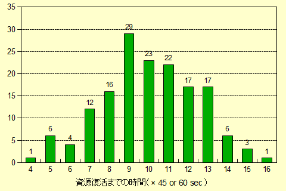

伐採スキル(Lumberjacking)
１．伐採道具および補助アイテム
（１）伐採道具
伐採に使用できる道具は主に斧系の武器です。
 hatchet ／axe ／
hatchet ／axe ／ battle axe
battle axe double axe ／
double axe ／ executioner's axe ／
executioner's axe ／ large battle axe
large battle axe two handed axe ／
two handed axe ／ ornate axe ／
ornate axe ／ dual short axe
dual short axe bardiche ／
bardiche ／ halberd ／
halberd ／ war axe
war axe
ガーゴイルの場合、ガーゴイル用の斧を使って伐採します。
Melisande's Corroded Hatche [腐敗のメリザンドハチェット]は、
伐採スキル+5の効果がありますが、スキル100を超えることはありません。
（２）特殊アイテム
これらのアイテムは所持、装備または使うことで効果を発揮します。
- Melisande's Corroded Hatche [腐敗のメリザンドハチェット] ： lumberjackingスキル +5.0(上限100)。Lady Melisandeの戦利品
- lumberjack's ○○ map[樵の地図(○○)] ： 地図に記された場所近くで伐採すると、地図の色の木材を入手できる。Publish76ボイドプール報酬品
- woodsman's ○○ talisman[伐採者のタリスマン(○○)] ： talismanと同じ色の木材を通常より5本多く入手できる。Publish76ボイドプール報酬品
２．伐採を行う
（１）伐採可能な場所
伐採は下の画像のように木が生えている場所であれば可能です。
（２）伐採の方法
- 伐採道具を装備する
- 装備した伐採道具をダブルクリックする
- 生えている木（幹に当てると確実です）をターゲットに指定する
- 伐採を開始して素材の入手に成功した場合、自分の鞄の中に素材が入る
なお、場際のできる範囲は、下のようにキャラクターから2マス四方となっていて、それ以上離れている木を伐採することはできません。
（３）注意
Trammelに生えている木は、ほとんどが葉の生えたものとなっており、「透過円を使用」した状態でも葉をターゲット
すれば伐採することができます。
しかし、Feluccaなどの葉の抜け落ちたような木を伐採するときは、「透過円を使用」した状態ではターゲット自体難しくなるため、
透過円は使用しないほうがよいでしょう。
３．採取できる素材
伐採により、様々なアイテムを入手することができます。
（１）木材
伐採できる区域には、「普通の木材」と「特殊な木材（下表の7種類のどれか1つ）」が含まれており、
伐採スキルが一定以上あれば、伐採1回ごとに「普通の木材」か「特殊な木材」のどちらかを採取できます。
ただし、伐採区域ごとに資源量が設定されており、それが枯渇すると、しばらくの間その区域で伐採ができなくなります。
1回あたりの採取数量
- 人間以外、Trammelルール（Trammel, Ilshenar, Malas, Tokuno）・・・10本
- 人間、Trammelルール（Trammel, Ilshenar, Malas, Tokuno）・・・11本
- 人間以外、Feluccaルール・・・20本
- 人間、Feluccaルール・・・22本
区域内の資源量
区域内の資源量は、単位ブロック（フィールドの8マス×8マス）あたりに生えている木の本数で決まっており、
木の本数が多いほど、枯渇するまでの伐採回数が増えます。
伐採可能回数＝（フィールド8マス四方に生えている木の本数）×4 回
| 名称 |
Wood |
Oak |
Ash |
Yew |
| 木材画像 |
|
|
|
|
| 採取必要スキル |
0.0 |
65.0 |
80.0 |
95.0 |
加工必要スキル
（大工、弓工） |
0.0 |
65.0 |
75.0 |
85.0 |
| 名称 |
Heartwood |
Bloodwood |
Frostwood |
| 木材画像 |
|
 |
|
| 採取必要スキル |
100.0 |
100.0 |
100.0 |
加工必要スキル
（大工、弓工） |
95.0 |
95.0 |
95.0 |
（２） bark fragment [樹皮のかけら]
bark fragment [樹皮のかけら]
伐採スキル100以上のキャラクターが、伐採したときに入手できます。（３）〜（６）の資源も同様です。
入手確率：10％程度（エルフは25％増）
木製鎧の作成（大工）やwood pulp [木のパルプ]（料理）の材料として使用します。
（３） luminescent fungi [夜光キノコ]
luminescent fungi [夜光キノコ]
入手確率：3％程度（エルフは25％増）
darkglow potion[夜光毒]（錬金）、snake charmer flute[蛇使いのフルート]（大工）、練成の希少材料として使用します。
（４） switch [小枝]
switch [小枝]
入手確率：2％程度（エルフは25％増）
runed switch[ルーンの小枝]、acid proof rope[耐酸ロープ]（大工）の材料として使用します。
（５）parasitic plant [寄生植物]
入手確率：1％程度（エルフは25％増）
parasitic potion[寄生毒]（錬金）、練成の希少材料として使用します。
（６） brilliant amber [輝琥珀]
brilliant amber [輝琥珀]
入手確率：0.1％程度（エルフは25％増）
アクセサリやレシピ武器の作成、練成の希少材料として使用します。
（７）![crystal shards
[クリスタル片]](crystal_shards.gif) crystal shards [クリスタル片]
crystal shards [クリスタル片]
Ter Murで伐採したとき入手できます。伐採スキルが低くても入手可能です。
４．資源の復活
復活までの時間
プレイヤーが区画内の資源（木材）を採取し尽くすと、一時的に枯渇した状態となります。
枯渇した資源は時間の経過により復活しますが、要する時間は一定ではありません。
復活までの時間は、その区画で最初に資源を採取したときが起点となり、グラフのようにある範囲をとります。
グラフ横軸の単位は、エルフで45秒、それ以外の種族で60秒となります。

採掘と同じ仕様のため、採掘と同じグラフを使用
資源復活時と特殊素材
資源再生と特殊素材に関わる仕様が、Publish46より導入されています。
- ある区画では、普通素材＋特殊素材（普通素材も含む）が採取できる状態。
- 鉱石または木材がある区画で、プレイヤーが資源を採取する。
- 一定時間が経過して、資源が再生する。このとき、AまたはBどちらかの処理が行われ、1に戻る。
A ： 採取できる特殊素材は変わらない（90％）
B ： 採取できる特殊素材を自動選択する（10％）
選択される特殊素材の種類（普通素材も含む）は、普通素材が最も選ばれやすく上級の特殊素材は選ばれにくくなっています。
なお、この自動選択の結果、直前に採取できた特殊素材の種類から変わらない可能性もあります。